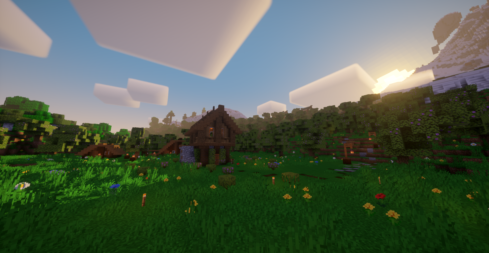

Docker de informații
Pagină Enciclopedică creată în totalitate de către 28edx după ce jegoșeniile de la Fandom ne-au șters pagina
Versiunea antecedentă a acestei pagini era pe wiki fandom, creată tot de 28edxwrd.
Breasla Orange nu are nimic de aface cu compania de telefonie „Orange”.
Pagina „Casă” Enciclopedică.

Hei, hei!
Am abandonat proiectul, pentru că se pare că pe unii nu prea îi interesează.
Hei, hei!
Nu te aștepta să mai rămână extrem de mult site-ul online.
Bine ai venit la pagina oficială Enciclopedică Orange!
Aici vei găsi toate detaliile breslei Orange.
Vizionează paginile atașate mai jos pentru a începe! :-) (more coming)
